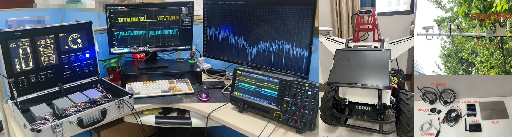
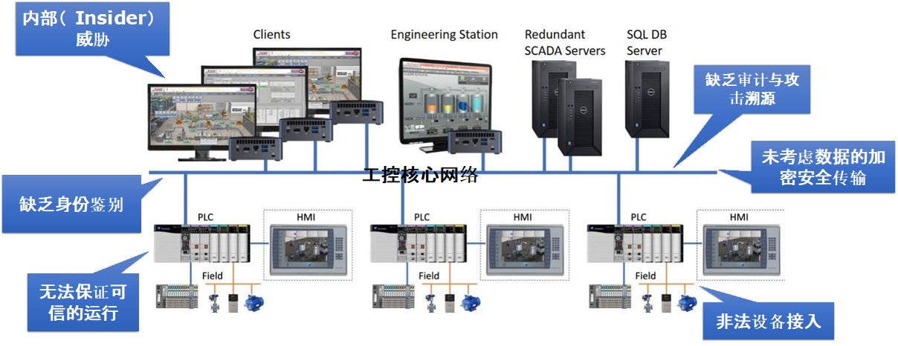

Professor
College of Computer Science and Technology
Nanjing University of Aeronautics and Astronautics
29 Jiangjun Boulevard
Nanjing 211106, China
Office: College Building #236
Email: hhan@nuaa.edu.cn
Dr. Hao Han is a Professor in the College of Computer Science and Technology, Nanjing University of Aeronautics and Astronautics (NUAA). He received his Ph.D. degree from the College of William and Mary in 2014, advised by Prof. Qun Li. Prior to joining NUAA, Dr. Han worked at IBM China Research Laboratory, Microsoft Research Asia, and Intelligent Automation Inc., US. He currently leads the Security of Smart Systems Lab (S3Lab) at NUAA. He received the Jiangsu Distinguished Professor（江苏省特聘教授）, the Six Talent Peaks Project of Jiangsu Province （江苏省六大人才高峰）, and the ACM Nanjing Rising Star Award. Dr. Han's research has been mainly focused on System Security in the the practice of protecting intelligent systems from unauthorized access, tampering, or data leakage. He is a member of CCF, IEEE and ACM.
- Operating Systems（中文）, Spring 2019 - Present
- Principle of Computer’s Composition (English), Fall, 2019 - 2020
- Security in Computer System (English), Fall 2020 -
2023
- 2024，“中国网谷-华为杯”中国研究生网络安全创新大赛，全国二等奖
- 2024，全国大学生信息安全竞赛（作品赛），全国二等奖
- 2022，中国高校计算机大赛网络技术挑战赛，全国总决赛二等奖
- 2022，全国大学生系统能力大赛操作系统设计赛, 优秀指导教师
- 2021，全国大学生信息安全竞赛（作品赛），全国二等奖
With the development of the automotive industry, the security of connected and autonomous vehicles (CAVs) has become a hot research field in recent years. However, previous studies mainly focus on the threats and defending mechanisms from the networking perspective, while newly emerging attacks are targeting more core components of CAVs such as OS and AI. Therefore, the defense methods against these attacks are urgently needed. In this paper, we revisit emerging attacks and their technical countermeasures for CAVs in a layered inventory, including in-vehicle systems, V2X, and self-driving. This project aims to provide insights into potential new attack vectors and their countermeasures for CAVs. We hope to shed light on future research in this area.
Industrial control systems generally lack security design from the beginning. The design mainly considers the real-time performance, reliability and stability of the system, sacrificing security for real-time performance. Traditional IT security solutions such as identity authentication, authorization, and encryption are not suitable for industrial control systems. There are a large number of vulnerabilities in industrial devices and protocols. According to the national CNVD statistics, as of September 2021, the number of industrial control system vulnerabilities has exceeded 3,100, while security vendors, hackers and other organizations may have far more vulnerabilities than CNVD statistics. However, key industrial devices are closed and difficult to update. These loopholes may be maliciously exploited at critical moments, resulting in production theft, monitoring, and destruction. Furthermore, the accelerated integration of IT&OT has led to the exposure of more and more security threats since the industrial control systems are changing from close to open, from stand-alone to interconnected, and more and more devices are directly exposed to attackers. This project aims to secure PLC/RTU in industrial control systems. The involved techniques include hardware secure accelerator, device fingerprinting, lightweight identity authentication, etc.
Memory corruption vulnerabilities are the root cause of many modern attacks. Numerous defenses have mainly focused on mitigating control-data attacks, leaving modern systems and programs vulnerable to non-control-data attacks. The main drawbacks of existing non-control-data attacks are in three aspects: overhead, compatibility, and soundness. To mitigate the potential risk of software attacks, modern applications such as Chrome browser are designed to follow a multi-process model to quarantine programs into different processes so that memory errors in one process do not directly affect other processes. However, there are no automated solutions to partition legacy programs. This project will investigate the inference of data secrecy and their context and automated binary program partitioning based on binary program analysis and rewriting. This project aims to provide a new solution to defend against memory corruption attacks (especially against non-control-data attacks). The involved techniques include TEE (Trusted Execution Environment), Intel SGX, ARM TrustZone, virtualization, program obfuscation, program analysis & binary rewriting, etc.
Copyright © 2024 by Hao Han (as of Aug. 2024)
{kind=link}
{kind=link}